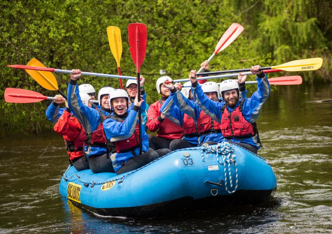

Keen for a wet and wild challenge? Good - you've come to the right place. Challenge nature and your friends to an adrenaline filled day with a fantastic white water rafting experience in Scotland. With awesome rivers, drops and rapids, Scotland is where it's at if you want to try the most thrilling white water rafting in Britain. Rafting can be enjoyed all year round in Scotland and is ideal for both first time rafters and adrenaline junkies.
Here are a few suggestions for rafting in Scotland